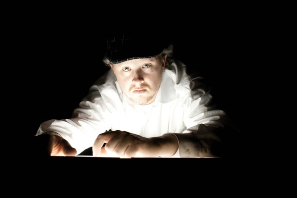
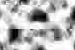
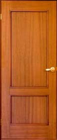

Download Now
- 
-

The Iron Yards is...
AWESOME
(Click above line to reveal)
WelcomeToProgramming™

Hover your mouse over the tv to make it flicker.
ZOOM

Hover to make grayscale
Hover to make sepia toned
Hover to desaturate; click to increase saturation
Hover to make a Ballack-Barney monster with hue rotate
Hover to increase contrast; click to decrease contrast